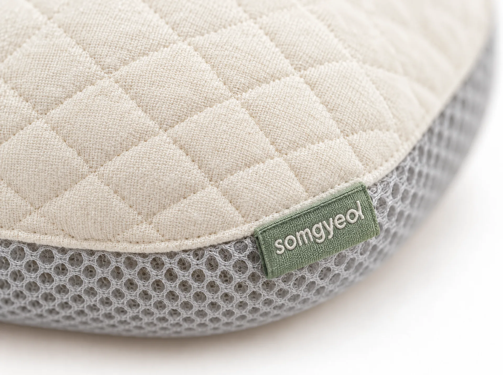
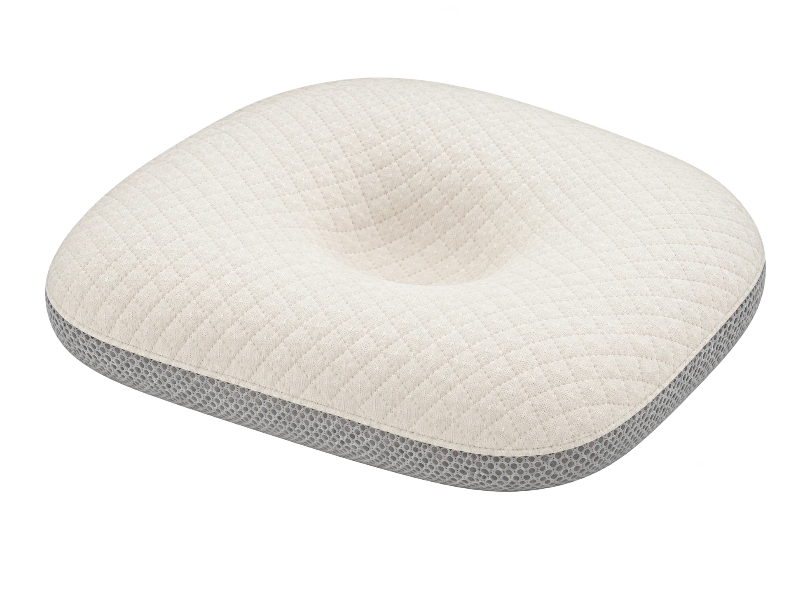
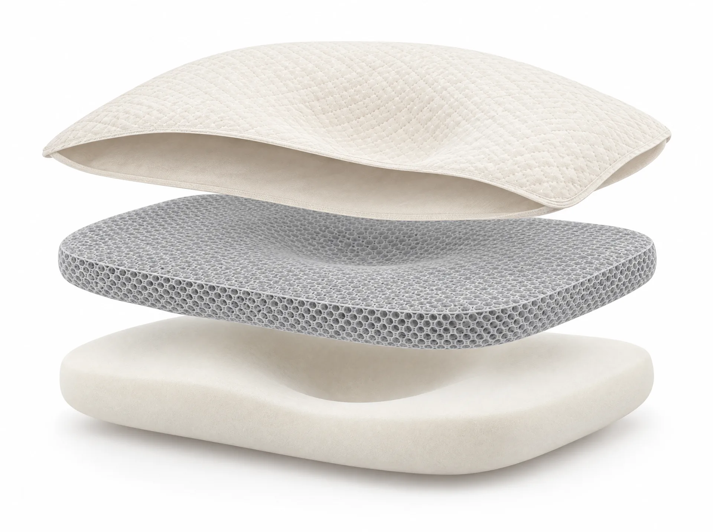
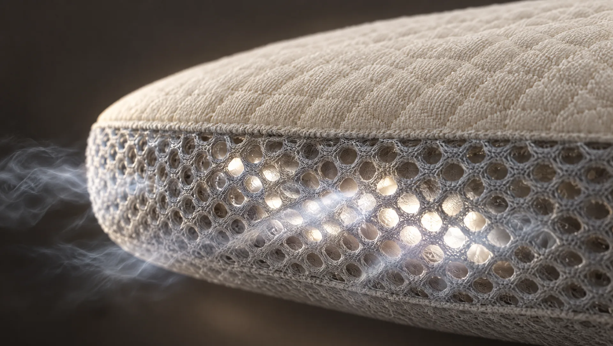
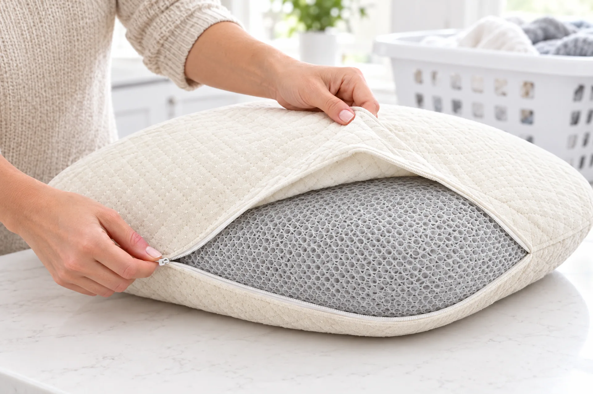
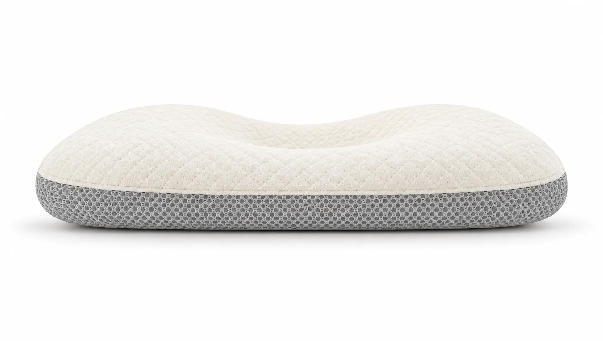
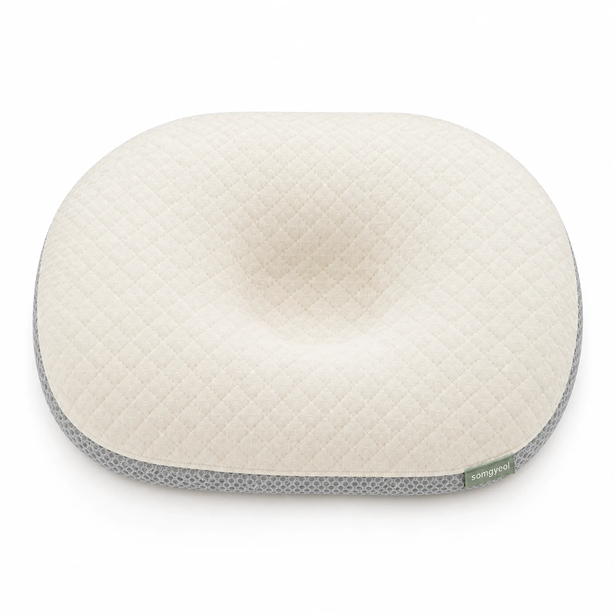
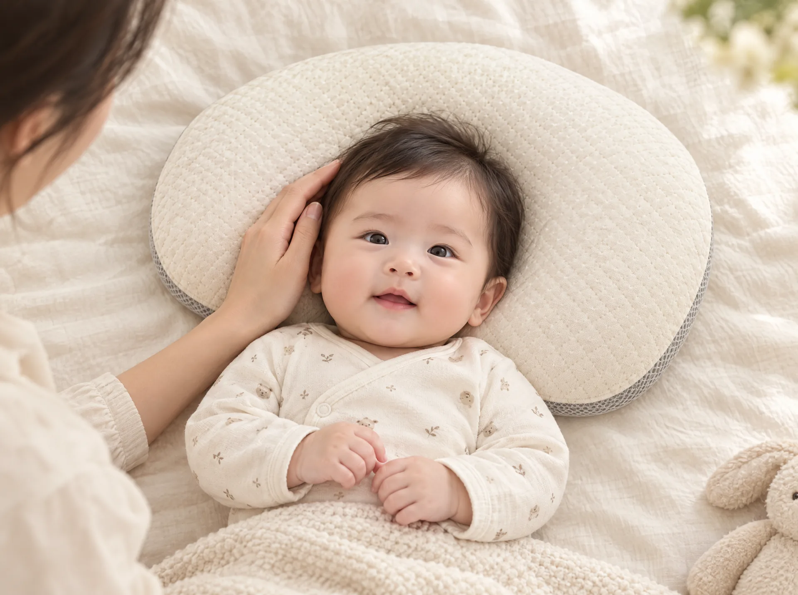
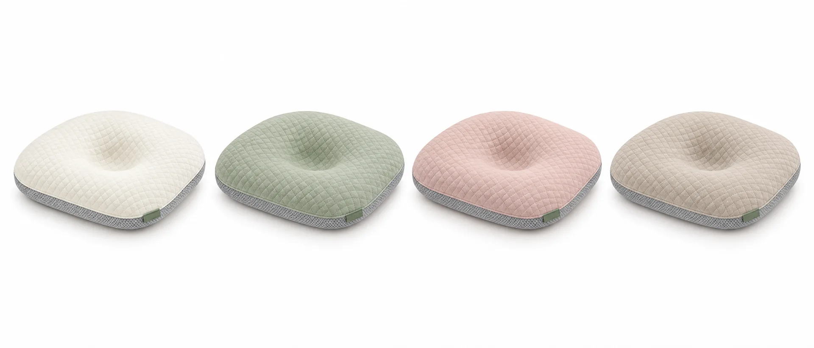

퀼팅의 결
오가닉 코튼 100% 퀼팅 커버.
솜결 에어 베개
가볍고 정직한 3겹 구조. 보호자가 지켜보는 깨어 있는 시간을 위해 만들었습니다.

스크롤하면 베개가 돌아갑니다.
벗겨서 빨고, 숨 쉬고, 낮고 단단하게 받칩니다.

시험할 수 있는 것만 적었습니다.
0 g
무게. 한 손으로 드는 가벼움.
0 cm
높이. 낮고 단단한 구조.
0 / 0 / 0 mm
인서트 패드로 조절하는 성장 맞춤 높이.
0회
세탁 시험. 수축률 2% 이내.

오가닉 코튼 100% 퀼팅 커버.

옆면까지 열린 3D 에어메쉬.

지퍼 하나로 분리.

높이 5 cm.

압력을 넓게 분산.

보호자 곁에서, 잘 보이는 곳에서.
소재의 과학
3D 에어메쉬는 위아래가 아니라 옆으로도 숨을 쉽니다. 뒤통수의 열이 머물지 않도록.
○○ cm³/cm²/s
통기도. 공인기관 시험 수치 자리. 시험성적서 발급 후 기재합니다.
20 mg/kg 이하
포름알데히드. 유아용 섬유제품 안전기준 항목을 공인기관에서 시험했습니다. pH 4.0~7.5.
아기방에 조용히 섞이는 색만 골랐습니다.

아이보리 (기본)
안전 안내
질병관리청은 아기를 똑바로 눕혀 재우고, 잠자리에 베개·쿠션·인형을 두지 말 것을 권합니다. 저희는 이 권고를 먼저 안내합니다. 두상 관리의 기본은 자세 바꾸기와 터미타임이며, 솜결은 깨어 있는 시간의 보조 도구입니다.
| 크기 | 30 × 25 × 5 cm |
|---|---|
| 무게 | 180 g |
| 구조 | 3겹 (퀼팅 커버 · 3D 에어메쉬 코어 · 저반발 지지 베이스) |
| 높이 조절 | 인서트 패드 2 mm × 2장 동봉 (0 / 2 / 4 mm) |
| 월령 가이드 | 1~2개월 0 mm · 3~4개월 2 mm · 5개월~ 4 mm · 뒤집기 시작 시 중단 |
| 커버 | 오가닉 코튼 100%, OEKO-TEX Standard 100 Class I 원단 |
| 세탁 | 커버 분리 세탁, 30도 · 건조기 금지 · 코어 통세탁 |
|---|---|
| 시험 | 포름알데히드 20 mg/kg 이하 · pH 4.0~7.5 · 통기도 ○○ cm³/cm²/s · 세탁 20회 |
| 인증 | KC 안전확인 신고번호 CB0000-0000 (가상) |
| 권장 사용 | 생후 1개월~뒤집기 시작 전, 보호자가 지켜보는 깨어 있는 시간 |
| 제조 | 대한민국 대구 (가상) |
| 가격 | 89,000원 · 커버 추가 29,000원 · 선물 세트 109,000원 |
생후 1개월부터 뒤집기를 시작하기 전까지, 보호자가 지켜보는 깨어 있는 시간에 사용합니다. 처음에는 인서트 패드 없이(0 mm) 시작하세요.
아니요. 수면 중 사용을 권하지 않습니다. 질병관리청 권고대로 잠자리에는 베개를 두지 말고, 깨어 있을 때만 사용하세요.
커버는 지퍼로 분리해 30도 물에 세탁하고 건조기는 쓰지 마세요. 에어메쉬 코어는 통세탁이 가능하며 그늘에서 말립니다.
베이스 아래에 2 mm 인서트 패드를 0장, 1장, 2장 넣어 0 / 2 / 4 mm로 조절합니다. 1~2개월 0 mm, 3~4개월 2 mm, 5개월부터 4 mm를 권합니다.
사용을 중단하세요. 아기가 스스로 몸을 뒤집기 시작하면 어떤 높이로도 사용하지 않습니다.